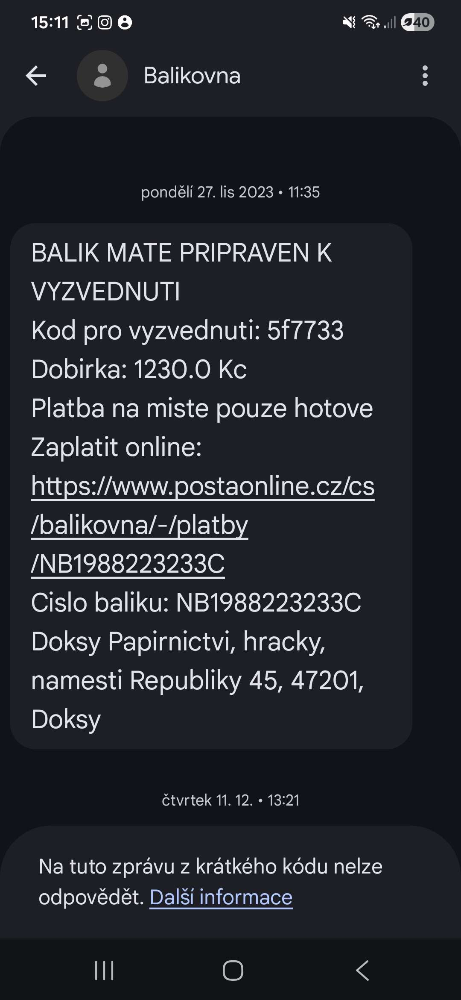
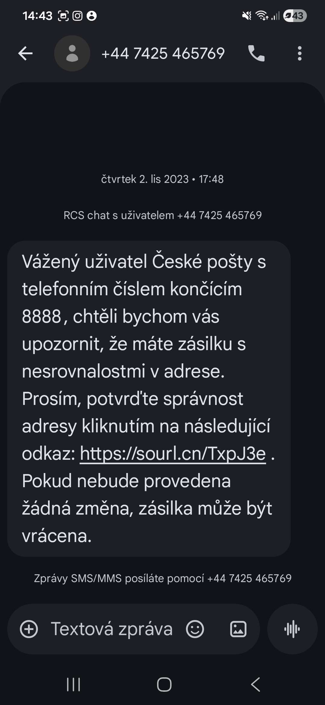
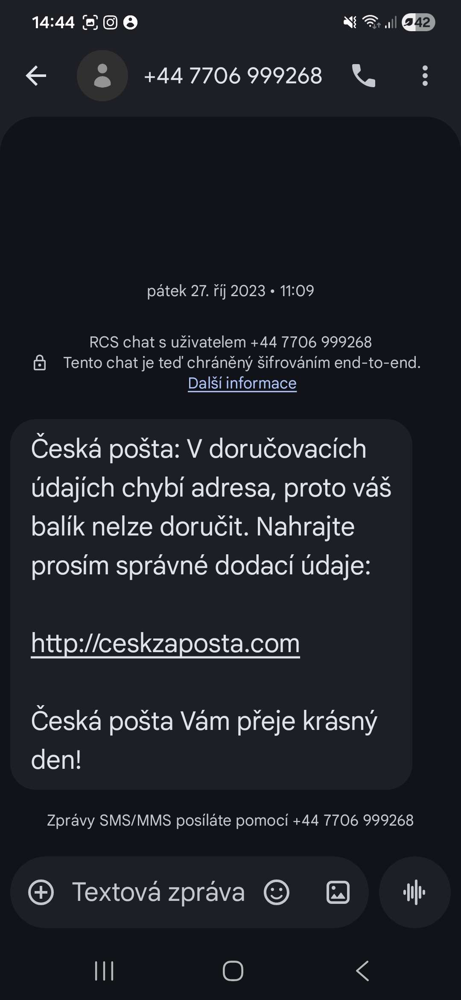
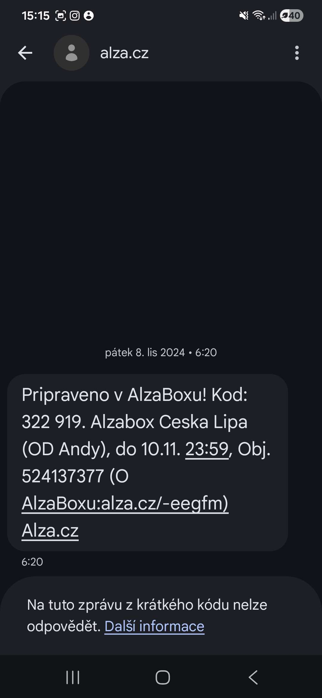

Typy kybernetických hrozeb
Ransomware, trojský kůň, phishing, spyware, adware.
Lehká úloha
Kybernetické hrozby představují různé způsoby, jak může útočník poškodit zařízení, získat citlivá data nebo omezit fungování služby.
Některé útoky spoléhají na škodlivý software, jiné na nepozornost uživatele nebo chyby v zabezpečení.
Mezi nejčastější hrozby patří:
Ransomware
Ransomware je škodlivý program, který po napadení zařízení zašifruje soubory a znemožní k nim přístup. Útočník pak požaduje výkupné za jejich odemčení. Tento typ útoku bývá nebezpečný hlavně pro firmy, školy nebo nemocnice, protože může vyřadit důležitá data i celé systémy. Obranou je především pravidelné zálohování, aktualizace systému a opatrnost při otevírání příloh nebo odkazů v e-mailech.
Trojský kůň
Trojský kůň je škodlivý program, který se tváří jako běžná nebo užitečná aplikace. Uživatel si ho často stáhne sám, protože vypadá důvěryhodně, ale po spuštění může otevřít útočníkovi přístup do zařízení, krást data nebo nainstalovat další malware. Proti trojanům pomáhá stahovat software jen z ověřených zdrojů, kontrolovat soubory antivirem a neinstalovat podezřelé programy.
Spyware
Spyware je software určený k tajnému sledování uživatele. Může zaznamenávat stisky kláves, sledovat aktivitu v prohlížeči nebo odesílat citlivé informace útočníkovi. Podobně funguje i část jiného škodlivého softwaru, například trojanů. Uživatel se může bránit hlavně antivirem, pravidelnou kontrolou zařízení a instalací programů pouze z důvěryhodných zdrojů.
Adware
Adware je program, který zobrazuje nevyžádané reklamy, často ve formě vyskakovacích oken nebo přesměrování na jiné stránky. Na první pohled nemusí působit tak nebezpečně jako jiný malware, ale může zpomalovat zařízení, rušit práci a někdy i sbírat informace o uživateli. Nejlepší ochranou je obezřetnost při instalaci bezplatných programů, používání antiviru a stahování aplikací pouze z ověřených míst.
Phishing
Phishing je podvodná metoda, při které se útočník snaží získat citlivé údaje, například hesla, čísla platebních karet nebo přihlašovací údaje. Nejčastěji probíhá pomocí falešných e-mailů nebo podvržených webových stránek, které vypadají jako skutečné. S phishingem úzce souvisí sociální inženýrství, tedy manipulace s člověkem(často pod časovým tlakem). Útočník se nesnaží obejít jen technické zabezpečení, ale hlavně přesvědčit oběť, aby mu sama poskytla přístup nebo důležité informace. Obrana spočívá v kontrole adres webů, opatrnosti při klikání na odkazy a používání vícefaktorového ověřování.
DoS a DDoS
DoS neboli Denial of Service je útok, jehož cílem je přetížit server nebo službu tak, aby přestala správně fungovat pro běžné uživatele. Pokud je stejný útok veden z velkého množství zařízení najednou, označuje se jako DDoS, tedy Distributed Denial of Service. Tyto útoky často využívají síť napadených zařízení, někdy označovanou jako botnet. Obranou bývá filtrování provozu, omezení podezřelých požadavků, využití ochranných služeb proti DDoS a správně nastavená síťová infrastruktura.
Zero day zranitelnost
Zero-day zranitelnost je chyba v programu nebo systému, o které výrobce ještě neví nebo pro ni zatím neexistuje oprava. Pokud ji útočník zneužije dříve, než je vydaná bezpečnostní aktualizace, jde o velmi nebezpečný typ útoku. Uživatel se proti němu úplně neochrání, ale pomáhá pravidelně aktualizovat software, používat bezpečnostní nástroje a omezovat zbytečné služby a přístupy.
SQL injetion
SQL injection je útok zaměřený na webové aplikace, které pracují s databází. Útočník vloží škodlivý SQL příkaz do vstupního pole, například formuláře nebo přihlašovacího okna, a pokud je aplikace špatně zabezpečená, může tak získat data z databáze, změnit je nebo je smazat. Obranou je správné ošetření vstupů, používání parametrizovaných dotazů a důsledné zabezpečení aplikace na straně serveru.
DNS spoofing
DNS spoofing je útok, při kterém útočník podvrhne odpověď DNS serveru. Uživatel pak může být přesměrován na falešnou stránku, i když zadá správnou webovou adresu. Tento útok je nebezpečný hlavně proto, že si oběť často ničeho nevšimne. Ochrana spočívá v používání důvěryhodných DNS serverů, bezpečnostních technologií jako DNSSEC a také v kontrole certifikátu a adresy webu.
Man-in-the-middle
Man-in-the-middle je útok, při kterém se útočník vloží mezi dvě komunikující strany a odposlouchává nebo mění přenášená data. Může se objevit například na nezabezpečené Wi-Fi síti nebo při podvržení komunikace v síti. Částečně souvisí i s phishingem nebo DNS spoofingem, protože jejich cílem může být právě přesměrování oběti do situace, kde útočník komunikaci zachytí. Obranou je používání šifrovaného připojení, důvěryhodných sítí, VPN a kontrola zabezpečení webu pomocí HTTPS a platného certifikátu.
Poznej zda se jedná o phishing nebo ne.

Je tato zpráva podvodná?

Je tato zpráva podvodná?

Je tato zpráva podvodná?

Je tato zpráva podvodná?
Přečti si situaci a pod ní vyber, o jaký typ útoku jde.
Zaměstnanci firmy přišel e-mail, který vypadal jako zpráva od účetního oddělení. Byl v něm odkaz na nový interní portál, kde se měl co nejdříve přihlásit. Stránka vypadala téměř stejně jako skutečný firemní web, a tak bez váhání zadal své přihlašovací údaje.
O jaký typ útoku jde?
Uživatel si stáhl program, který sliboval zrychlení počítače a odstranění chyb v systému. Po instalaci se aplikace tvářila normálně, ale na pozadí začala odesílat data a otevřela útočníkovi vzdálený přístup do zařízení.
O jaký typ útoku jde?
Majiteli e-shopu si zákazníci začali stěžovat, že se jejich web skoro vůbec nenačítá. Server byl zahlcen obrovským množstvím požadavků z různých zařízení a běžní návštěvníci se na stránky vůbec nedostali.
O jaký typ útoku jde?
Student se připojil na veřejnou Wi-Fi v kavárně a přihlásil se ke svému školnímu účtu. O několik dní později zjistil, že se někdo cizí dostal do jeho účtu, přestože heslo nikomu neřekl a nepřišel mu žádný podezřelý e-mail.
O jaký typ útoku jde?
Po otevření přílohy z neznámého e-mailu se na počítači nic zvláštního nestalo. Až po nějaké době si uživatel všiml, že se mu začaly zobrazovat nečekané reklamy, prohlížeč se chová jinak a zařízení je pomalejší než dřív.
O jaký typ útoku jde?
Správce webu objevil, že se v databázi začaly zobrazovat údaje, ke kterým se běžný návštěvník vůbec neměl dostat. Později se ukázalo, že útočník zneužil špatně zabezpečené vstupní pole ve formuláři.
O jaký typ útoku jde?
Uživatel zadal do prohlížeče správnou adresu své banky, ale stránka, která se mu zobrazila, po něm chtěla znovu zadat přihlašovací údaje a působila lehce podezřele. Adresa vypadala správně, ale ve skutečnosti byl přesměrován jinam.
O jaký typ útoku jde?
Na firemním počítači se začaly zpomalovat některé činnosti a správce si všiml neobvyklé komunikace na pozadí. Po kontrole se ukázalo, že program sbíral informace o aktivitě uživatele, historii prohlížení a odesílal je pryč bez jeho vědomí.
O jaký typ útoku jde?
Jednoho rána se uživatel nedostal ke svým dokumentům, fotkám ani tabulkám. Soubory zůstaly na disku, ale nešly otevřít. Na obrazovce se objevila zpráva s instrukcemi k platbě za obnovení přístupu.
O jaký typ útoku jde?
Správce systému zjistil, že útočníci zneužili čerstvě objevenou chybu v aplikaci dřív, než výrobce stihl vydat opravu. Firma měla software aktualizovaný, ale proti tomuto konkrétnímu problému ještě neexistovala záplata.
O jaký typ útoku jde?
Uživatel dostal telefonát od člověka, který se představil jako pracovník technické podpory. Tvrdil, že na zařízení byl zaznamenán bezpečnostní problém, a přesvědčil ho, aby mu nadiktoval ověřovací kód a nainstaloval vzdálený přístup.
O jaký typ útoku jde?
Server školy začal být na krátkou dobu několikrát denně nedostupný. Analýza ukázala, že ho opakovaně zahlcoval provoz, ale nešlo o velké množství různých zdrojů — útok přicházel převážně z jednoho místa.
O jaký typ útoku jde?
Přiřaď typ útoku k jeho typickému dopadu
Doplň, co je typickým cílem nebo způsobem útoku. Klikni na slovo a pak na mezeru (nebo naopak) a nakonec stiskni Odeslat.
phishing →
ransomware →
DDoS →
spyware →
trojský kůň →
SQL injection →
DNS spoofing →
man-in-the-middle →
zero‑day zranitelnost →
Výrazy k přiřazení: